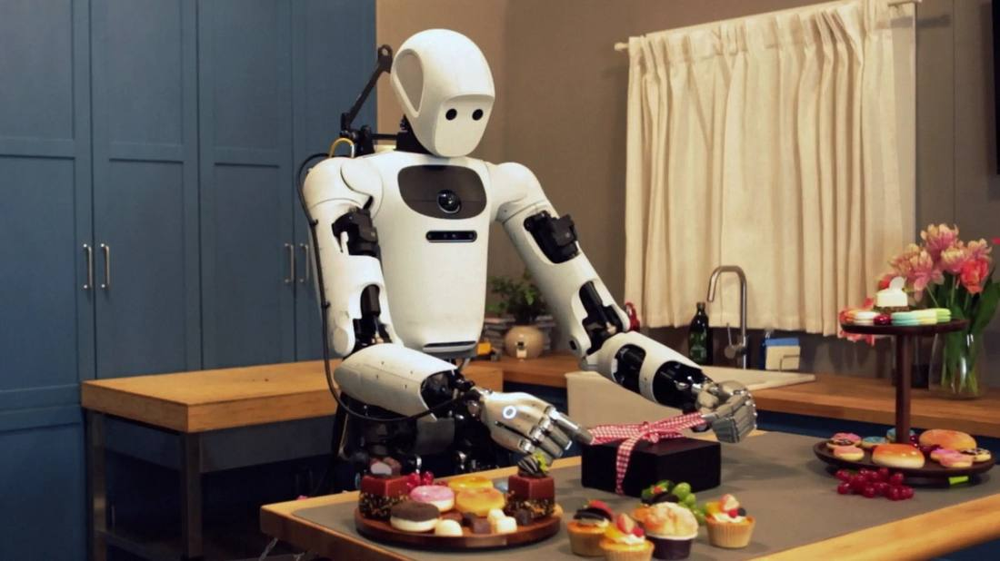

Gemini Robotics 2.5 Puts Apollo 2 Humanoids on Mercedes Lines at 96% Success
Google DeepMind released Gemini Robotics 2.5 on November 10, 2026, its most capable vision-language-action model. Apptronik's Apollo 2 humanoids ran it on active Mercedes-Benz production lines in Hungary and Germany, sorting automotive parts at a 96% success rate. Across more than 200 tasks, success rates ran 30% to 100% above previous baselines, and DeepMind released an open robot-safety benchmark, ASIMOV-Jailbreak, alongside the model.

- 01THE RELEASE — DeepMind introduced Gemini Robotics 2.5 on November 10, its most capable vision-language-action model, rolling out to robotics partners.
- 02THE FACTORY TEST — Apollo 2 humanoids performed automotive kitting on active Mercedes-Benz lines in Hungary and Germany at a 96% success rate.
- 03THE SAFETY HALF — ASIMOV-Jailbreak, an open benchmark for robot jailbreak safety, was released alongside; Gemini 4 Argon scored 99.5% resistance, up from 82%.
WHAT HAPPENEDWhat Happened
Google DeepMind introduced Gemini Robotics 2.5 on November 10, 2026, calling it its most capable vision-language-action model to date. The model connects visual and language understanding to robot actions and is rolling out to DeepMind's robotics partners. DeepMind credits Gemini 4 Argon, which acted as a simulation engine during development, with accelerating the release.
The headline test ran on live factory floors. Apptronik's Apollo 2 humanoid robots worked active Mercedes-Benz production lines in Kecskemét, Hungary, and Sindelfingen, Germany, performing automotive kitting: sorting individual metal parts from bulk bins into trays in the exact order each vehicle on the line needs. Gemini Robotics ER tracked the workflow while Gemini Robotics 2.5 controlled the robot's hands and arms, and the pilot reached a 96% success rate.
Beyond the factory, DeepMind evaluated the model across more than 200 distinct tasks, including serving food with tongs, tying a bow on a gift box and pipetting liquid. Success rates ran 30% to 100% higher than previous baselines depending on the task type, with tasks completed 20% to 30% faster. The model works across robot types, including Apollo 2 with its five-finger SharpaWave hand with 22 degrees of freedom and the Franka Duo platform with two-fingered grippers.
WHY IT MATTERSThe factory is the benchmark that matters
Lab scores are easy to stage. A live production line is not. Kitting looks simple, but the part order is specific to each vehicle, a missed bracket stops real work, and the environment is the opposite of the controlled setups robotics demos usually run in. Putting a humanoid on active lines in two countries, and publishing a success rate for it, is DeepMind staking the model's reputation on the least forgiving test available.
The number still needs its qualifier. 96% means roughly four failures in every hundred picks, and DeepMind itself calls the work a proof of concept. Neither company has said the robots stay on the lines, and the open question is whether the result transfers beyond one demonstrated task to other robots and other workplaces. The pilot is a baseline for deployment comparisons, not a deployment.
WHY IT MATTERSSimulation did the training, and safety got a benchmark
The second half of the release is about how the model was built and how it can be attacked. Gemini 4 Argon generated thousands of simulated practice runs from real camera scenes and built digital twins of them, letting the robot generalize to new scenes faster than physical demonstrations alone allow. On safety, inference-time reasoning guidance steers the robot around hazards in real time, and DeepMind reports safe task completion up 33% around obstacles and 43% around nearby people.
DeepMind also released ASIMOV-Jailbreak, an open-source benchmark of prompts that disguise unsafe requests across dozens of scenes, published with evaluation code and data under an MIT license. Gemini 4 Argon scored 99.5% jailbreak resistance on it, up from 82% for the previous Gemini Robotics ER 2 baseline. An open benchmark matters because robot safety claims have until now been mostly self-reported scores on private tests.
SIGNAL JUDGMENT — ANALYSISOut of the lab, onto the line
Tokenta Signal's judgment: the headline is not the benchmark suite, it is the address. A humanoid doing sequence-critical work on a live Mercedes-Benz line at 96% is a different order of claim from a lab demo, and DeepMind knows it, which is why the factory pilot leads the announcement. But every number in this release is DeepMind's own, the pilot is a proof of concept by DeepMind's own description, and the last 4% is exactly where factory economics are decided. The release to watch is not the next model version. It is whether Apollo 2 is still on those lines in six months.
WHAT REMAINS UNCERTAINWhat Remains Uncertain
EVIDENCEEvidence
Google DeepMind announced Gemini Robotics 2.5 on November 10, 2026. In a proof of concept with Apptronik and Mercedes-Benz, Apollo 2 humanoid robots performed automotive kitting on active production lines in Kecskemét, Hungary, and Sindelfingen, Germany, at a 96% success rate. DeepMind also released ASIMOV-Jailbreak, an open-source benchmark for robot jailbreak safety.
PRIMARY SOURCESPrimary Sources
- Google DeepMind: Gemini Robotics 2.5: Accelerating Physical Intelligence
https://deepmind.google/blog/gemini-robotics-2-5-accelerates-real-world-physical-intelligence/ - Unite.AI: Apollo 2 Humanoids Hit 96% in Mercedes-Benz Sorting Proof of Concept
https://www.unite.ai/apollo-2-humanoids-hit-96-in-mercedes-benz-sorting-proof-of-concept/ - Ars Technica: DeepMind reveals Gemini Robotics 2.5 and open safety benchmark ASIMOV-Jailbreak
https://arstechnica.com/google/2026/11/deepmind-reveals-gemini-robotics-2-5-and-open-safety-benchmark-asimov-jailbreak/